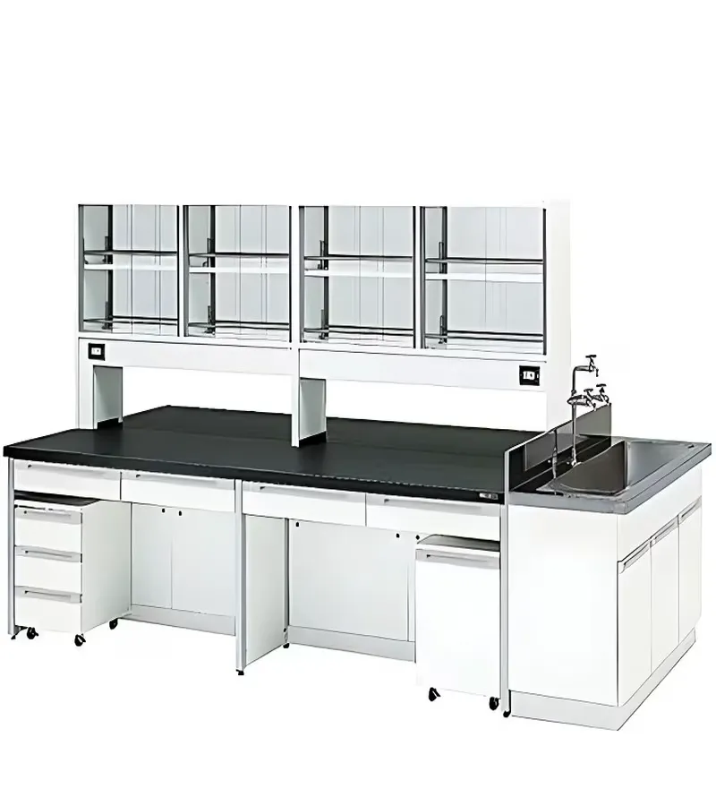
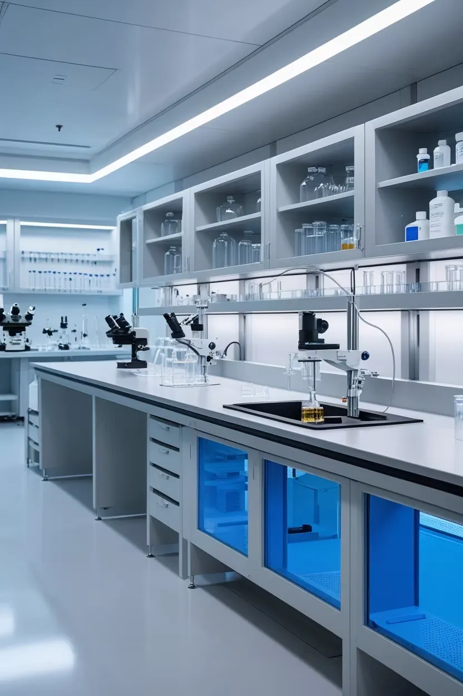
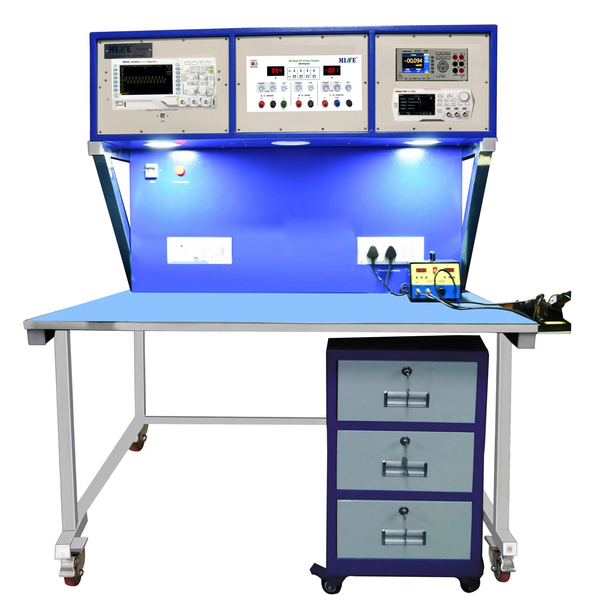

01 / 06
Industrial Precision Workbenches
Robust workstations for demanding manufacturing and technical environments.
- Heavy-duty steel construction
- Maximum load-bearing capacity
- Ergonomic design
- Customizable configuration
INDUSTRIAL PRECISION WORKBENCHES
V STEEL / Industrial Workbenches
Explore workbench solutions
Industrial Precision Workbenches
Industrial Precision Workbenches
Transform your industrial workspace with our meticulously engineered workbenches. Designed for maximum productivity, these robust steel workstations offer unparalleled durability, ergonomic design, and customizable configurations to meet the most demanding manufacturing and technical environments.

Advanced Scientific Workspace
Elevate scientific research with our cutting-edge laboratory workbenches. Engineered with precision, these workstations feature chemical-resistant surfaces, anti-static properties, and specialized compartments. Designed to protect sensitive equipment, facilitate complex research, and maintain a sterile, organized scientific environment.

Specialized Technical Solutions
Revolutionize your electronics and assembly processes with our specialized workbenches. Featuring integrated power outlets, ESD protection, precision tool storage, and ergonomic design, these workstations are engineered to enhance productivity, ensure component safety, and optimize workflow efficiency in high-precision manufacturing environments.
Designed around the work
Vishal Steel Products offers a diverse range of high-performance steel workbenches engineered to meet complex industrial, scientific, and technical workspace requirements. Our workbenches combine precision engineering, durability, and innovative design to provide optimal productivity and efficiency.
01 / 06
Robust workstations for demanding manufacturing and technical environments.
02 / 06
Precision-engineered workstations for scientific and research settings.
03 / 06
Advanced workstations for precision assembly and technical manufacturing.
04 / 06
Specialized workstations for electronics manufacturing and component handling.
05 / 06
High-precision workstations for medical research and clinical environments.
06 / 06
Adaptable workstations for versatile industrial and technical applications.
Built with purpose
A platform for precision
Our industrial workbenches are engineered for maximum efficiency and durability in demanding work environments. Each workbench combines ergonomic design with robust construction to provide a stable, versatile platform for various industrial applications. From precision assembly to heavy manufacturing, our workbenches deliver exceptional performance and reliability.
Precision workspace / V STEEL
Engineered for maximum productivity and precision, our steel workbenches provide robust workspace solutions for manufacturing, research, technical, and industrial environments. Designed to optimize workflow, enhance efficiency, and support complex technical operations.
Technical specification
Our industrial steel workbenches offer:
The V STEEL approach
We stand out through:
Advanced engineering with stringent quality control
Customizable solutions tailored to specific industry needs
Competitive pricing without compromising on precision
Comprehensive technical support and workspace consultation
ISO-certified manufacturing and design processes